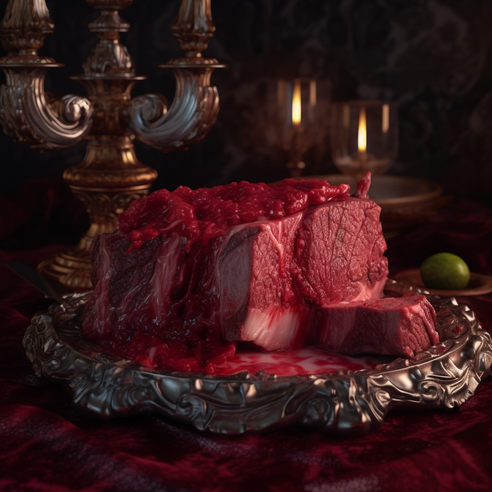

Vampire's Velvety Venison

Description
Succumb to the night's allure with our Vampire's Velvety Venison. This is not your average stew; it's a forbidden feast, slow-cooked in the light of the full moon.
Ingredients
- Venison, a gift from the wolves of the wilderness
- Red wine, as deep and dark as a vampire's gaze
- Root vegetables, kissed by the midnight frost
Steps
- Brown the venison under a moonlit sky.
- Summon a potion of red wine, stirring in whispers of the night.
- Add the frost-kissed vegetables and let the stew tell tales of the night until dawn.